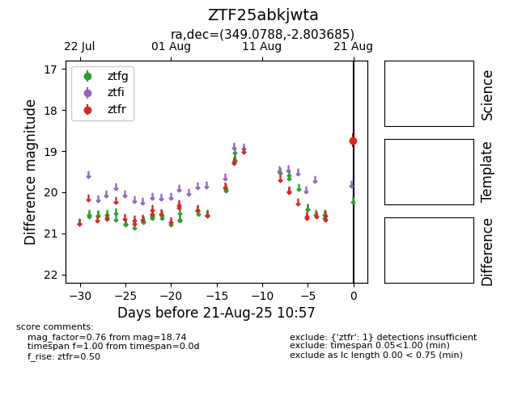

Target ZTF25abkjwta at 2025-08-21 10:57, see:
FINK: fink-portal.org/ZTF25abkjwta
Lasair: lasair-ztf.lsst.ac.uk/objects/ZTF25abkjwta
ALeRCE: alerce.online/object/ZTF25abkjwta
alt names
ZTF25abkjwta (ztf,alerce)
coordinates:
equatorial (ra, dec) = (349.0788,-2.80369)
galactic (l, b) = (75.7535,-56.69434)
photometry
last ztfr=18.74
1 ztfr detections
